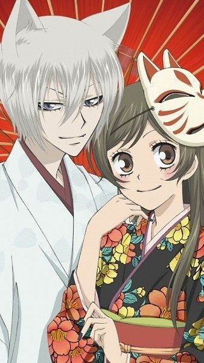

🌟 Galería Temática
Nanami y Tomoe
Resumen
Kamisama Hajimemashita sigue a Nanami, una chica que se convierte en deidad de una tierra tras salvar a un misterioso hombre. En su nuevo papel, conoce a Tomoe, un espíritu zorro que se convierte en su protector. La historia combina comedia, romance y fantasía.
Curiosidad 1
Tomoe originalmente servía a una deidad destructiva antes de conocer a Nanami.
Curiosidad 2
El anime está basado en el manga de Julietta Suzuki y cuenta con 25 volúmenes.